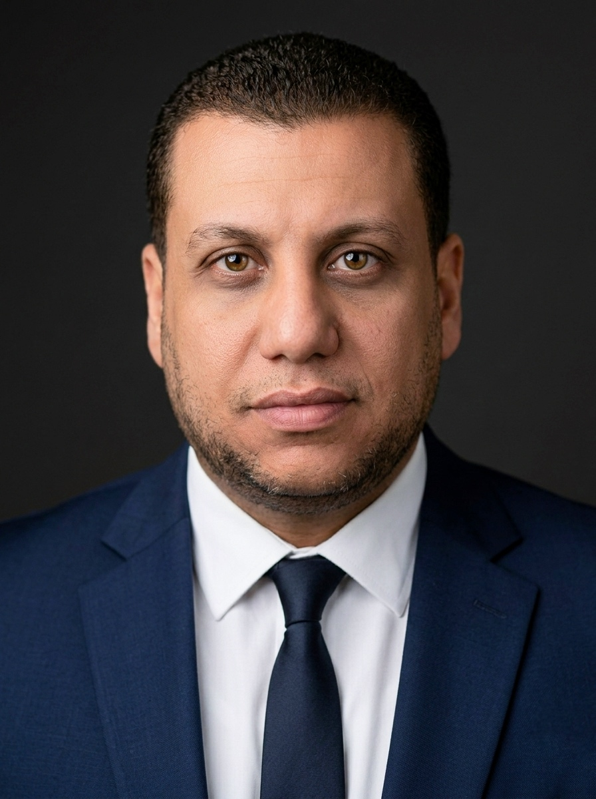

AI engineer with 10+ years of banking & risk management experience. Currently completing my Master's in Computational Social Systems at TU Graz, researching how conversational AI transforms business intelligence. Founder of an AI solutions agency in Austria.

From data pipelines to production full-stack apps — every layer, built from the ground up.
Production systems and research projects — from enterprise platforms to ML pipelines.
AI-augmented analytics dashboard that lets users query business databases using natural language. Ask questions in plain English, get instant SQL-powered insights with interactive visualizations.
Enterprise document management system with AI-powered PDF extraction. Processes multi-page scanned documents, classifies types, and extracts structured data using LLM vision.
KNN-based anomaly detection pipeline for temporal data. Fine-tuned model parameters to identify collective anomalies in univariate time series.
View on GitHubPostgreSQL database analyzing Spotify's most streamed songs. Designed relational schema with complex SQL queries correlating track features and popularity.
View on GitHubNLP pipeline analyzing Reddit sentiment across crypto subreddits. Explored correlations between social media sentiment and Bitcoin price movements.
View on GitHubML pipeline comparing Linear Regression, Random Forest, and Gradient Boosting for real estate pricing. Includes EDA, feature engineering, and model evaluation.
View on GitHubFrom banking operations to AI engineering — a decade of domain expertise meets cutting-edge technology.
Founded a registered IT agency specializing in AI-powered business analysis, automation, and data processing solutions. Develop and deploy smart technologies for data-driven decision-making and business efficiency.
Led internal control systems across 10 branches with 15% reduction in operational risks. Discovered internal financial manipulation through detailed data analysis, coordinating corrective measures with audit.
Conducted data-driven internal audits contributing to 80% decrease in reported fraud cases. Assessed branch-level controls with reports that directly influenced senior management decisions.
Supervised cash and non-cash operations across branches. Primary liaison with regulatory authorities for compliance and AML standards. Introduced KPIs and reporting systems.
Analyzed branch financial performance and maintained control systems to safeguard assets and ensure data accuracy across operational functions.
Delivered customer service using data insights to promote bank products, contributing to enhanced customer satisfaction and retention.
Specialization in Business Analytics. Coursework: Machine Learning, Data Mining, Business Intelligence, Statistical Analysis (Python, R), Social Network Analysis, Recommender Systems.
Foundation in financial analysis, auditing, corporate finance, managerial accounting, and business administration.